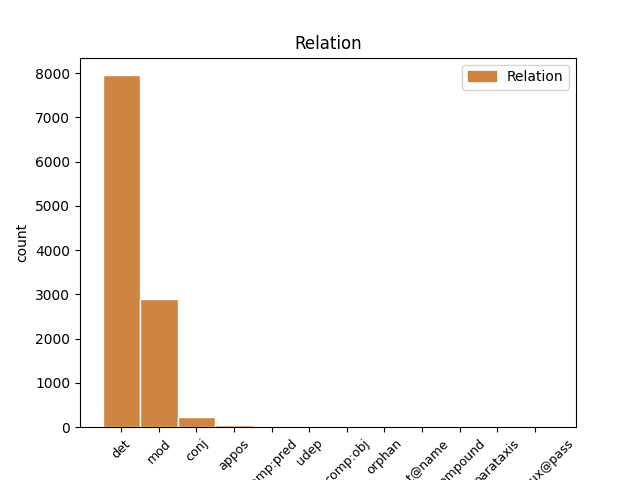
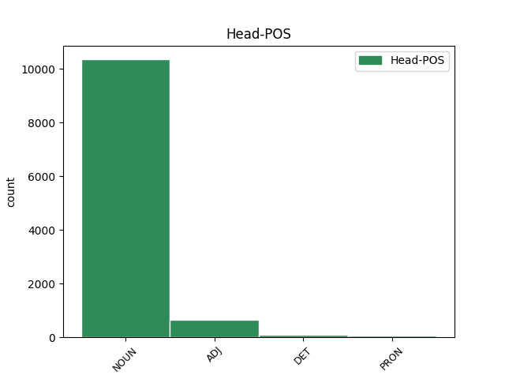
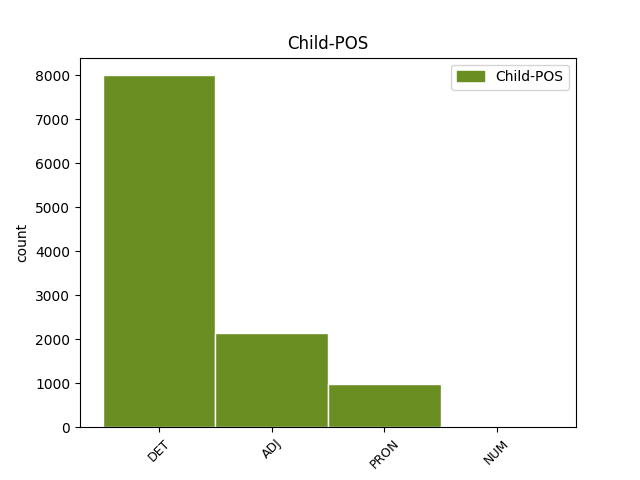

Distribution of features within this leaf



Agreement Rules sorted by frequency.
- When the dependent token is the determiner(det) of the head token, and the head token is NOUN and the dependent token is DET.
1 Området _ _ _ _ 0 _ _ _
2 rundt _ _ _ _ 0 _ _ _
3 lavvoen _ _ _ _ 0 _ _ _
4 har _ _ _ _ 0 _ _ _
5 blitt _ _ _ _ 0 _ _ _
6 ein ein DET _ Gender=Masc|Number=Sing|PronType=Art 7 det _ _
7 samlingsstad samlingsstad NOUN _ Definite=Ind|Gender=Masc|Number=Sing 0 _ _ _
8 for _ _ _ _ 0 _ _ _
9 skigåarane _ _ _ _ 0 _ _ _
10 . _ _ _ _ 0 _ _ _
1 Og _ _ _ _ 0 _ _ _
2 treng _ _ _ _ 0 _ _ _
3 nokon _ _ _ _ 0 _ _ _
4 litt litt ADJ _ Definite=Ind|Degree=Pos|Gender=Neut|Number=Sing 5 mod _ _
5 plaster plaster NOUN _ Definite=Ind|Gender=Neut|Number=Sing 0 _ _ _
6 til _ _ _ _ 0 _ _ _
7 eit _ _ _ _ 0 _ _ _
8 gnagsår _ _ _ _ 0 _ _ _
9 , _ _ _ _ 0 _ _ _
10 hjelper _ _ _ _ 0 _ _ _
11 Raude _ _ _ _ 0 _ _ _
12 Kross-vaktene _ _ _ _ 0 _ _ _
13 til _ _ _ _ 0 _ _ _
14 med _ _ _ _ 0 _ _ _
15 det _ _ _ _ 0 _ _ _
16 òg _ _ _ _ 0 _ _ _
17 . _ _ _ _ 0 _ _ _
1 Her _ _ _ _ 0 _ _ _
2 kan _ _ _ _ 0 _ _ _
3 dei _ _ _ _ 0 _ _ _
4 få _ _ _ _ 0 _ _ _
5 fylt _ _ _ _ 0 _ _ _
6 opp _ _ _ _ 0 _ _ _
7 vassflaskene _ _ _ _ 0 _ _ _
8 sine _ _ _ _ 0 _ _ _
9 og _ _ _ _ 0 _ _ _
10 ungane _ _ _ _ 0 _ _ _
11 er _ _ _ _ 0 _ _ _
12 veldig _ _ _ _ 0 _ _ _
13 glade _ _ _ _ 0 _ _ _
14 for _ _ _ _ 0 _ _ _
15 saftstasjonen saftstasjon NOUN _ Definite=Def|Gender=Masc|Number=Sing 0 _ _ _
16 vår vår PRON _ Gender=Masc|Number=Sing|Poss=Yes|PronType=Prs 15 mod _ SpaceAfter=No
17 , _ _ _ _ 0 _ _ _
18 seier _ _ _ _ 0 _ _ _
19 Frantzen _ _ _ _ 0 _ _ _
20 . _ _ _ _ 0 _ _ _
1 Påskevaktene _ _ _ _ 0 _ _ _
2 har _ _ _ _ 0 _ _ _
3 stort stor ADJ _ Definite=Ind|Degree=Pos|Gender=Neut|Number=Sing 4 mod _ _
4 sett se ADJ _ Definite=Ind|Gender=Neut|Number=Sing|VerbForm=Part 0 _ _ _
5 hatt _ _ _ _ 0 _ _ _
6 rolege _ _ _ _ 0 _ _ _
7 dagar _ _ _ _ 0 _ _ _
8 på _ _ _ _ 0 _ _ _
9 Skafsåheia _ _ _ _ 0 _ _ _
10 opp _ _ _ _ 0 _ _ _
11 gjennom _ _ _ _ 0 _ _ _
12 åra _ _ _ _ 0 _ _ _
13 . _ _ _ _ 0 _ _ _
1 Det _ _ _ _ 0 _ _ _
2 blei _ _ _ _ 0 _ _ _
3 frykteleg _ _ _ _ 0 _ _ _
4 oppgått oppgå ADJ _ Definite=Ind|Gender=Neut|Number=Sing|VerbForm=Part 0 _ _ _
5 og _ _ _ _ 0 _ _ _
6 sørpete sørpete ADJ _ Definite=Ind|Degree=Pos|Gender=Neut|Number=Sing 4 conj _ _
7 etter _ _ _ _ 0 _ _ _
8 kvart _ _ _ _ 0 _ _ _
9 . _ _ _ _ 0 _ _ _
1 Folk _ _ _ _ 0 _ _ _
2 ynskjer _ _ _ _ 0 _ _ _
3 noko nokon DET _ Gender=Neut|Number=Sing|PronType=Ind 4 det _ _
4 ekte ekte ADJ _ Definite=Ind|Degree=Pos|Gender=Neut|Number=Sing 0 _ _ _
5 og _ _ _ _ 0 _ _ _
6 nært _ _ _ _ 0 _ _ _
7 , _ _ _ _ 0 _ _ _
8 noko _ _ _ _ 0 _ _ _
9 som _ _ _ _ 0 _ _ _
10 har _ _ _ _ 0 _ _ _
11 med _ _ _ _ 0 _ _ _
12 samhald _ _ _ _ 0 _ _ _
13 å _ _ _ _ 0 _ _ _
14 gjera _ _ _ _ 0 _ _ _
15 , _ _ _ _ 0 _ _ _
16 avslutta _ _ _ _ 0 _ _ _
17 Enger _ _ _ _ 0 _ _ _
18 Lahnstein _ _ _ _ 0 _ _ _
19 . _ _ _ _ 0 _ _ _
1 Fyrste _ _ _ _ 0 _ _ _
2 arbeidsdag _ _ _ _ 0 _ _ _
3 i _ _ _ _ 0 _ _ _
4 desember _ _ _ _ 0 _ _ _
5 trakk _ _ _ _ 0 _ _ _
6 alle _ _ _ _ 0 _ _ _
7 lærarane _ _ _ _ 0 _ _ _
8 ein ein DET _ Gender=Masc|Number=Sing|PronType=Art 0 _ _ _
9 lapp _ _ _ _ 0 _ _ _
10 kvar kvar DET _ Gender=Masc|Number=Sing|PronType=Tot 8 det _ SpaceAfter=No
11 . _ _ _ _ 0 _ _ _
1 Krog _ _ _ _ 0 _ _ _
2 var _ _ _ _ 0 _ _ _
3 med _ _ _ _ 0 _ _ _
4 i _ _ _ _ 0 _ _ _
5 kampen _ _ _ _ 0 _ _ _
6 om _ _ _ _ 0 _ _ _
7 andreplassen _ _ _ _ 0 _ _ _
8 , _ _ _ _ 0 _ _ _
9 men _ _ _ _ 0 _ _ _
10 hadde _ _ _ _ 0 _ _ _
11 ikkje _ _ _ _ 0 _ _ _
12 nok _ _ _ _ 0 _ _ _
13 krefter _ _ _ _ 0 _ _ _
14 att _ _ _ _ 0 _ _ _
15 på _ _ _ _ 0 _ _ _
16 oppløpet _ _ _ _ 0 _ _ _
17 og _ _ _ _ 0 _ _ _
18 var _ _ _ _ 0 _ _ _
19 halvtanna halvannan NUM _ Gender=Neut|Number=Sing|NumType=Card 20 mod _ _
20 sekund sekund NOUN _ Definite=Ind|Gender=Neut|Number=Sing 0 _ _ _
21 bak _ _ _ _ 0 _ _ _
22 lagkamerat _ _ _ _ 0 _ _ _
23 Iver _ _ _ _ 0 _ _ _
24 Markengbakken _ _ _ _ 0 _ _ _
25 som _ _ _ _ 0 _ _ _
26 spurta _ _ _ _ 0 _ _ _
27 best _ _ _ _ 0 _ _ _
28 bak _ _ _ _ 0 _ _ _
29 vinnaren _ _ _ _ 0 _ _ _
30 David _ _ _ _ 0 _ _ _
31 Zauner _ _ _ _ 0 _ _ _
32 . _ _ _ _ 0 _ _ _
1 Skulen _ _ _ _ 0 _ _ _
2 har _ _ _ _ 0 _ _ _
3 fått _ _ _ _ 0 _ _ _
4 tri _ _ _ _ 0 _ _ _
5 trinnleiarar _ _ _ _ 0 _ _ _
6 , _ _ _ _ 0 _ _ _
7 og _ _ _ _ 0 _ _ _
8 barnehage _ _ _ _ 0 _ _ _
9 og _ _ _ _ 0 _ _ _
10 kultur _ _ _ _ 0 _ _ _
11 har _ _ _ _ 0 _ _ _
12 fått _ _ _ _ 0 _ _ _
13 kvar kvar DET _ Gender=Masc|Number=Sing|PronType=Tot 14 det _ _
14 sin sin PRON _ Gender=Masc|Number=Sing|Poss=Yes|PronType=Prs 0 _ _ _
15 . _ _ _ _ 0 _ _ _
1 På _ _ _ _ 0 _ _ _
2 ein ein DET _ Gender=Masc|Number=Sing|PronType=Art 0 _ _ _
3 eller _ _ _ _ 0 _ _ _
4 annan annan DET _ Definite=Ind|Gender=Masc|Number=Sing|PronType=Dem 2 conj _ _
5 måte _ _ _ _ 0 _ _ _
6 har _ _ _ _ 0 _ _ _
7 alle _ _ _ _ 0 _ _ _
8 i _ _ _ _ 0 _ _ _
9 bygda _ _ _ _ 0 _ _ _
10 vore _ _ _ _ 0 _ _ _
11 med _ _ _ _ 0 _ _ _
12 å _ _ _ _ 0 _ _ _
13 ytt _ _ _ _ 0 _ _ _
14 sitt _ _ _ _ 0 _ _ _
15 også _ _ _ _ 0 _ _ _
16 denne _ _ _ _ 0 _ _ _
17 venda _ _ _ _ 0 _ _ _
18 . _ _ _ _ 0 _ _ _
1 - _ _ _ _ 0 _ _ _
2 Det det PRON _ Gender=Neut|Number=Sing|Person=3|PronType=Prs 0 _ _ _
3 kjem _ _ _ _ 0 _ _ _
4 an _ _ _ _ 0 _ _ _
5 på _ _ _ _ 0 _ _ _
6 om _ _ _ _ 0 _ _ _
7 eg _ _ _ _ 0 _ _ _
8 kjem _ _ _ _ 0 _ _ _
9 på _ _ _ _ 0 _ _ _
10 nokon _ _ _ _ 0 _ _ _
11 lur _ _ _ _ 0 _ _ _
12 idé _ _ _ _ 0 _ _ _
13 , _ _ _ _ 0 _ _ _
14 det det PRON _ Gender=Neut|Number=Sing|Person=3|PronType=Prs 2 appos _ SpaceAfter=No
15 , _ _ _ _ 0 _ _ _
16 seier _ _ _ _ 0 _ _ _
17 han _ _ _ _ 0 _ _ _
18 lurt _ _ _ _ 0 _ _ _
19 . _ _ _ _ 0 _ _ _
1 I _ _ _ _ 0 _ _ _
2 denne _ _ _ _ 0 _ _ _
3 drøftinga _ _ _ _ 0 _ _ _
4 er _ _ _ _ 0 _ _ _
5 språkdimensjonen _ _ _ _ 0 _ _ _
6 i _ _ _ _ 0 _ _ _
7 kulturpolitikken _ _ _ _ 0 _ _ _
8 trekt _ _ _ _ 0 _ _ _
9 fram _ _ _ _ 0 _ _ _
10 som _ _ _ _ 0 _ _ _
11 eit _ _ _ _ 0 _ _ _
12 eige eigen DET _ Definite=Ind|Gender=Neut|Number=Sing|PronType=Prs 13 mod _ _
13 tema tema NOUN _ Definite=Ind|Gender=Neut|Number=Sing 0 _ _ _
14 . _ _ _ _ 0 _ _ _
1 - _ _ _ _ 0 _ _ _
2 De _ _ _ _ 0 _ _ _
3 får _ _ _ _ 0 _ _ _
4 orsaka _ _ _ _ 0 _ _ _
5 at _ _ _ _ 0 _ _ _
6 de _ _ _ _ 0 _ _ _
7 må _ _ _ _ 0 _ _ _
8 ta _ _ _ _ 0 _ _ _
9 til _ _ _ _ 0 _ _ _
10 takke _ _ _ _ 0 _ _ _
11 med _ _ _ _ 0 _ _ _
12 noko nokon DET _ Gender=Neut|Number=Sing|PronType=Ind 0 _ _ _
13 så _ _ _ _ 0 _ _ _
14 simpelt simpel ADJ _ Definite=Ind|Degree=Pos|Gender=Neut|Number=Sing 12 mod _ _
15 som _ _ _ _ 0 _ _ _
16 ein _ _ _ _ 0 _ _ _
17 påtroppande _ _ _ _ 0 _ _ _
18 ordførar _ _ _ _ 0 _ _ _
19 , _ _ _ _ 0 _ _ _
20 opna _ _ _ _ 0 _ _ _
21 Vinje _ _ _ _ 0 _ _ _
22 til _ _ _ _ 0 _ _ _
23 humring _ _ _ _ 0 _ _ _
24 frå _ _ _ _ 0 _ _ _
25 150 _ _ _ _ 0 _ _ _
26 frammøtte _ _ _ _ 0 _ _ _
27 på _ _ _ _ 0 _ _ _
28 Vinjar _ _ _ _ 0 _ _ _
29 . _ _ _ _ 0 _ _ _
1 Den _ _ _ _ 0 _ _ _
2 fyrste _ _ _ _ 0 _ _ _
3 tida _ _ _ _ 0 _ _ _
4 har _ _ _ _ 0 _ _ _
5 nok _ _ _ _ 0 _ _ _
6 vore _ _ _ _ 0 _ _ _
7 litt _ _ _ _ 0 _ _ _
8 ekstra _ _ _ _ 0 _ _ _
9 spesiell _ _ _ _ 0 _ _ _
10 då _ _ _ _ 0 _ _ _
11 me _ _ _ _ 0 _ _ _
12 skal _ _ _ _ 0 _ _ _
13 bli _ _ _ _ 0 _ _ _
14 vande _ _ _ _ 0 _ _ _
15 med _ _ _ _ 0 _ _ _
16 både _ _ _ _ 0 _ _ _
17 båtlivet båtliv NOUN _ Definite=Def|Gender=Neut|Number=Sing 0 _ _ _
18 og _ _ _ _ 0 _ _ _
19 det det PRON _ Gender=Neut|Number=Sing|Person=3|PronType=Prs 17 conj _ _
20 å _ _ _ _ 0 _ _ _
21 bu _ _ _ _ 0 _ _ _
22 så _ _ _ _ 0 _ _ _
23 tett _ _ _ _ 0 _ _ _
24 på _ _ _ _ 0 _ _ _
25 kvarandre _ _ _ _ 0 _ _ _
26 . _ _ _ _ 0 _ _ _
1 * _ _ _ _ 0 _ _ _
2 Det det PRON _ Gender=Neut|Number=Sing|Person=3|PronType=Prs 4 det _ _
3 viktigaste _ _ _ _ 0 _ _ _
4 skoleproblemet skoleproblem NOUN _ Definite=Def|Gender=Neut|Number=Sing 0 _ _ _
5 er _ _ _ _ 0 _ _ _
6 at _ _ _ _ 0 _ _ _
7 norske _ _ _ _ 0 _ _ _
8 elevar _ _ _ _ 0 _ _ _
9 generelt _ _ _ _ 0 _ _ _
10 ikkje _ _ _ _ 0 _ _ _
11 lærer _ _ _ _ 0 _ _ _
12 nok _ _ _ _ 0 _ _ _
13 . _ _ _ _ 0 _ _ _
1 Folk _ _ _ _ 0 _ _ _
2 ynskjer _ _ _ _ 0 _ _ _
3 noko _ _ _ _ 0 _ _ _
4 ekte _ _ _ _ 0 _ _ _
5 og _ _ _ _ 0 _ _ _
6 nært nær ADJ _ Definite=Ind|Degree=Pos|Gender=Neut|Number=Sing 0 _ _ _
7 , _ _ _ _ 0 _ _ _
8 noko noko PRON _ Gender=Neut|Number=Sing|Person=3|PronType=Ind,Prs 6 appos _ _
9 som _ _ _ _ 0 _ _ _
10 har _ _ _ _ 0 _ _ _
11 med _ _ _ _ 0 _ _ _
12 samhald _ _ _ _ 0 _ _ _
13 å _ _ _ _ 0 _ _ _
14 gjera _ _ _ _ 0 _ _ _
15 , _ _ _ _ 0 _ _ _
16 avslutta _ _ _ _ 0 _ _ _
17 Enger _ _ _ _ 0 _ _ _
18 Lahnstein _ _ _ _ 0 _ _ _
19 . _ _ _ _ 0 _ _ _
1 Desverre _ _ _ _ 0 _ _ _
2 var _ _ _ _ 0 _ _ _
3 det _ _ _ _ 0 _ _ _
4 nok _ _ _ _ 0 _ _ _
5 litt _ _ _ _ 0 _ _ _
6 for _ _ _ _ 0 _ _ _
7 kort _ _ _ _ 0 _ _ _
8 tid _ _ _ _ 0 _ _ _
9 frå _ _ _ _ 0 _ _ _
10 invitasjonen _ _ _ _ 0 _ _ _
11 til _ _ _ _ 0 _ _ _
12 møtet _ _ _ _ 0 _ _ _
13 , _ _ _ _ 0 _ _ _
14 seier _ _ _ _ 0 _ _ _
15 Tone Tone NOUN _ Gender=Fem 0 _ _ _
16 Edland _ _ _ _ 0 _ _ _
17 , _ _ _ _ 0 _ _ _
18 ei ein DET _ Gender=Fem|Number=Sing|PronType=Art 15 appos _ _
19 av _ _ _ _ 0 _ _ _
20 dei _ _ _ _ 0 _ _ _
21 tri _ _ _ _ 0 _ _ _
22 Telemarks-kvinnene _ _ _ _ 0 _ _ _
23 som _ _ _ _ 0 _ _ _
24 går _ _ _ _ 0 _ _ _
25 i _ _ _ _ 0 _ _ _
26 brodden _ _ _ _ 0 _ _ _
27 for _ _ _ _ 0 _ _ _
28 større _ _ _ _ 0 _ _ _
29 åtgaum _ _ _ _ 0 _ _ _
30 på _ _ _ _ 0 _ _ _
31 distrikta _ _ _ _ 0 _ _ _
32 i _ _ _ _ 0 _ _ _
33 valkampen _ _ _ _ 0 _ _ _
34 . _ _ _ _ 0 _ _ _
1 Frå _ _ _ _ 0 _ _ _
2 kommunen _ _ _ _ 0 _ _ _
3 si _ _ _ _ 0 _ _ _
4 side _ _ _ _ 0 _ _ _
5 var _ _ _ _ 0 _ _ _
6 det _ _ _ _ 0 _ _ _
7 på _ _ _ _ 0 _ _ _
8 førehand _ _ _ _ 0 _ _ _
9 gjort gjere ADJ _ Definite=Ind|Gender=Neut|Number=Sing|VerbForm=Part 0 _ _ _
10 klart klar ADJ _ Definite=Ind|Degree=Pos|Gender=Neut|Number=Sing 9 comp:pred _ _
11 at _ _ _ _ 0 _ _ _
12 det _ _ _ _ 0 _ _ _
13 ikkje _ _ _ _ 0 _ _ _
14 var _ _ _ _ 0 _ _ _
15 aktuelt _ _ _ _ 0 _ _ _
16 å _ _ _ _ 0 _ _ _
17 diskutere _ _ _ _ 0 _ _ _
18 eller _ _ _ _ 0 _ _ _
19 handsame _ _ _ _ 0 _ _ _
20 personalsaker _ _ _ _ 0 _ _ _
21 i _ _ _ _ 0 _ _ _
22 folkemøte _ _ _ _ 0 _ _ _
23 , _ _ _ _ 0 _ _ _
24 men _ _ _ _ 0 _ _ _
25 at _ _ _ _ 0 _ _ _
26 saka _ _ _ _ 0 _ _ _
27 skulle _ _ _ _ 0 _ _ _
28 bli _ _ _ _ 0 _ _ _
29 handtert _ _ _ _ 0 _ _ _
30 organisasjonsmessig _ _ _ _ 0 _ _ _
31 i _ _ _ _ 0 _ _ _
32 dei _ _ _ _ 0 _ _ _
33 rette _ _ _ _ 0 _ _ _
34 organa _ _ _ _ 0 _ _ _
35 i _ _ _ _ 0 _ _ _
36 kommunen _ _ _ _ 0 _ _ _
37 . _ _ _ _ 0 _ _ _
1 - _ _ _ _ 0 _ _ _
2 Når _ _ _ _ 0 _ _ _
3 det _ _ _ _ 0 _ _ _
4 kjem _ _ _ _ 0 _ _ _
5 nye _ _ _ _ 0 _ _ _
6 menneske _ _ _ _ 0 _ _ _
7 til _ _ _ _ 0 _ _ _
8 ein _ _ _ _ 0 _ _ _
9 liten _ _ _ _ 0 _ _ _
10 stad _ _ _ _ 0 _ _ _
11 vil _ _ _ _ 0 _ _ _
12 det _ _ _ _ 0 _ _ _
13 nødvendigvis _ _ _ _ 0 _ _ _
14 bli _ _ _ _ 0 _ _ _
15 meir _ _ _ _ 0 _ _ _
16 av _ _ _ _ 0 _ _ _
17 alt _ _ _ _ 0 _ _ _
18 - _ _ _ _ 0 _ _ _
19 både _ _ _ _ 0 _ _ _
20 av _ _ _ _ 0 _ _ _
21 det det PRON _ Gender=Neut|Number=Sing|Person=3|PronType=Prs 0 _ _ _
22 som _ _ _ _ 0 _ _ _
23 er _ _ _ _ 0 _ _ _
24 negativt _ _ _ _ 0 _ _ _
25 og _ _ _ _ 0 _ _ _
26 det det PRON _ Gender=Neut|Number=Sing|Person=3|PronType=Prs 21 conj _ _
27 som _ _ _ _ 0 _ _ _
28 er _ _ _ _ 0 _ _ _
29 positivt _ _ _ _ 0 _ _ _
30 . _ _ _ _ 0 _ _ _
1 Men _ _ _ _ 0 _ _ _
2 vel _ _ _ _ 0 _ _ _
3 så _ _ _ _ 0 _ _ _
4 mykje mykje ADJ _ Definite=Ind|Degree=Pos|Gender=Neut|Number=Sing 11 mod _ _
5 som _ _ _ _ 0 _ _ _
6 eit _ _ _ _ 0 _ _ _
7 forsvar _ _ _ _ 0 _ _ _
8 mot _ _ _ _ 0 _ _ _
9 engelskpåverknad _ _ _ _ 0 _ _ _
10 er _ _ _ _ 0 _ _ _
11 dette dette PRON _ Gender=Neut|Number=Sing|Person=3|PronType=Prs 0 _ _ _
12 ein _ _ _ _ 0 _ _ _
13 reaksjon _ _ _ _ 0 _ _ _
14 mot _ _ _ _ 0 _ _ _
15 det _ _ _ _ 0 _ _ _
16 hegemoniet _ _ _ _ 0 _ _ _
17 som _ _ _ _ 0 _ _ _
18 russisk _ _ _ _ 0 _ _ _
19 språk _ _ _ _ 0 _ _ _
20 og _ _ _ _ 0 _ _ _
21 kultur _ _ _ _ 0 _ _ _
22 har _ _ _ _ 0 _ _ _
23 hatt _ _ _ _ 0 _ _ _
24 i _ _ _ _ 0 _ _ _
25 desse _ _ _ _ 0 _ _ _
26 landa _ _ _ _ 0 _ _ _
27 , _ _ _ _ 0 _ _ _
28 og _ _ _ _ 0 _ _ _
29 dermed _ _ _ _ 0 _ _ _
30 eit _ _ _ _ 0 _ _ _
31 utslag _ _ _ _ 0 _ _ _
32 av _ _ _ _ 0 _ _ _
33 behovet _ _ _ _ 0 _ _ _
34 for _ _ _ _ 0 _ _ _
35 ei _ _ _ _ 0 _ _ _
36 ny _ _ _ _ 0 _ _ _
37 nasjonal _ _ _ _ 0 _ _ _
38 konsolidering _ _ _ _ 0 _ _ _
39 etter _ _ _ _ 0 _ _ _
40 at _ _ _ _ 0 _ _ _
41 Sovjetunionen _ _ _ _ 0 _ _ _
42 og _ _ _ _ 0 _ _ _
43 Warszawapakta _ _ _ _ 0 _ _ _
44 gjekk _ _ _ _ 0 _ _ _
45 i _ _ _ _ 0 _ _ _
46 oppløysing _ _ _ _ 0 _ _ _
47 . _ _ _ _ 0 _ _ _
1 Det _ _ _ _ 0 _ _ _
2 er _ _ _ _ 0 _ _ _
3 svært _ _ _ _ 0 _ _ _
4 verdfullt _ _ _ _ 0 _ _ _
5 for _ _ _ _ 0 _ _ _
6 både _ _ _ _ 0 _ _ _
7 unge _ _ _ _ 0 _ _ _
8 og _ _ _ _ 0 _ _ _
9 eldre _ _ _ _ 0 _ _ _
10 å _ _ _ _ 0 _ _ _
11 få _ _ _ _ 0 _ _ _
12 eit _ _ _ _ 0 _ _ _
13 vidsyn _ _ _ _ 0 _ _ _
14 utover _ _ _ _ 0 _ _ _
15 sitt sin PRON _ Gender=Neut|Number=Sing|Poss=Yes|PronType=Prs 16 mod _ _
16 eige eigen DET _ Definite=Ind|Gender=Neut|Number=Sing|PronType=Prs 0 _ _ _
17 , _ _ _ _ 0 _ _ _
18 meiner _ _ _ _ 0 _ _ _
19 ho _ _ _ _ 0 _ _ _
20 . _ _ _ _ 0 _ _ _
1 I _ _ _ _ 0 _ _ _
2 motsetnad _ _ _ _ 0 _ _ _
3 til _ _ _ _ 0 _ _ _
4 den _ _ _ _ 0 _ _ _
5 førre _ _ _ _ 0 _ _ _
6 regjeringa _ _ _ _ 0 _ _ _
7 sin _ _ _ _ 0 _ _ _
8 næringsnøytralitet _ _ _ _ 0 _ _ _
9 vert _ _ _ _ 0 _ _ _
10 det _ _ _ _ 0 _ _ _
11 no _ _ _ _ 0 _ _ _
12 satsa satse ADJ _ Definite=Ind|Gender=Neut|Number=Sing|VerbForm=Part 0 _ _ _
13 spesielt _ _ _ _ 0 _ _ _
14 mykje mykje ADJ _ Definite=Ind|Degree=Pos|Gender=Neut|Number=Sing 12 comp:obj _ _
15 innan _ _ _ _ 0 _ _ _
16 dei _ _ _ _ 0 _ _ _
17 næringsområda _ _ _ _ 0 _ _ _
18 der _ _ _ _ 0 _ _ _
19 me _ _ _ _ 0 _ _ _
20 har _ _ _ _ 0 _ _ _
21 kompetanse _ _ _ _ 0 _ _ _
22 eller _ _ _ _ 0 _ _ _
23 særlege _ _ _ _ 0 _ _ _
24 fortrinn _ _ _ _ 0 _ _ _
25 . _ _ _ _ 0 _ _ _
1 Borgersen _ _ _ _ 0 _ _ _
2 meiner _ _ _ _ 0 _ _ _
3 det _ _ _ _ 0 _ _ _
4 finst _ _ _ _ 0 _ _ _
5 ein _ _ _ _ 0 _ _ _
6 marknad _ _ _ _ 0 _ _ _
7 for _ _ _ _ 0 _ _ _
8 kjekjøt kjekjøt NOUN _ Definite=Ind|Gender=Neut|Number=Sing 0 _ _ _
9 , _ _ _ _ 0 _ _ _
10 noko noko PRON _ Gender=Neut|Number=Sing|Person=3|PronType=Ind,Prs 8 appos _ _
11 som _ _ _ _ 0 _ _ _
12 er _ _ _ _ 0 _ _ _
13 vanskeleg _ _ _ _ 0 _ _ _
14 å _ _ _ _ 0 _ _ _
15 få _ _ _ _ 0 _ _ _
16 tak _ _ _ _ 0 _ _ _
17 i _ _ _ _ 0 _ _ _
18 . _ _ _ _ 0 _ _ _
1 På _ _ _ _ 0 _ _ _
2 ein _ _ _ _ 0 _ _ _
3 eller _ _ _ _ 0 _ _ _
4 annan _ _ _ _ 0 _ _ _
5 måte _ _ _ _ 0 _ _ _
6 har _ _ _ _ 0 _ _ _
7 alle _ _ _ _ 0 _ _ _
8 i _ _ _ _ 0 _ _ _
9 bygda _ _ _ _ 0 _ _ _
10 vore _ _ _ _ 0 _ _ _
11 med _ _ _ _ 0 _ _ _
12 å _ _ _ _ 0 _ _ _
13 ytt yte ADJ _ Definite=Ind|Gender=Neut|Number=Sing|VerbForm=Part 0 _ _ _
14 sitt sin PRON _ Gender=Neut|Number=Sing|Poss=Yes|PronType=Prs 13 comp:obj _ _
15 også _ _ _ _ 0 _ _ _
16 denne _ _ _ _ 0 _ _ _
17 venda _ _ _ _ 0 _ _ _
18 . _ _ _ _ 0 _ _ _
1 Jamvel _ _ _ _ 0 _ _ _
2 om _ _ _ _ 0 _ _ _
3 hovudansvaret _ _ _ _ 0 _ _ _
4 for _ _ _ _ 0 _ _ _
5 språkpolitikken _ _ _ _ 0 _ _ _
6 i _ _ _ _ 0 _ _ _
7 prinsippet _ _ _ _ 0 _ _ _
8 har _ _ _ _ 0 _ _ _
9 lege _ _ _ _ 0 _ _ _
10 i _ _ _ _ 0 _ _ _
11 Kultur- _ _ _ _ 0 _ _ _
12 og _ _ _ _ 0 _ _ _
13 kyrkjedepartementet _ _ _ _ 0 _ _ _
14 også _ _ _ _ 0 _ _ _
15 til _ _ _ _ 0 _ _ _
16 no _ _ _ _ 0 _ _ _
17 , _ _ _ _ 0 _ _ _
18 kan _ _ _ _ 0 _ _ _
19 det _ _ _ _ 0 _ _ _
20 hevdast _ _ _ _ 0 _ _ _
21 å _ _ _ _ 0 _ _ _
22 ha _ _ _ _ 0 _ _ _
23 vore _ _ _ _ 0 _ _ _
24 noko noko PRON _ Gender=Neut|Number=Sing|Person=3|PronType=Ind,Prs 25 udep _ _
25 uklart uklar ADJ _ Definite=Ind|Degree=Pos|Gender=Neut|Number=Sing 0 _ _ _
26 kor _ _ _ _ 0 _ _ _
27 langt _ _ _ _ 0 _ _ _
28 dette _ _ _ _ 0 _ _ _
29 ansvaret _ _ _ _ 0 _ _ _
30 har _ _ _ _ 0 _ _ _
31 nådd _ _ _ _ 0 _ _ _
32 , _ _ _ _ 0 _ _ _
33 og _ _ _ _ 0 _ _ _
34 kor _ _ _ _ 0 _ _ _
35 aktivt _ _ _ _ 0 _ _ _
36 det _ _ _ _ 0 _ _ _
37 i _ _ _ _ 0 _ _ _
38 praksis _ _ _ _ 0 _ _ _
39 har _ _ _ _ 0 _ _ _
40 vore _ _ _ _ 0 _ _ _
41 følgt _ _ _ _ 0 _ _ _
42 opp _ _ _ _ 0 _ _ _
43 . _ _ _ _ 0 _ _ _
1 Det _ _ _ _ 0 _ _ _
2 same _ _ _ _ 0 _ _ _
3 gjer _ _ _ _ 0 _ _ _
4 det _ _ _ _ 0 _ _ _
5 å _ _ _ _ 0 _ _ _
6 rydde _ _ _ _ 0 _ _ _
7 opp _ _ _ _ 0 _ _ _
8 merkeband merkeband NOUN _ Definite=Ind|Gender=Neut|Number=Plur 0 _ _ _
9 og _ _ _ _ 0 _ _ _
10 anna annan DET _ Definite=Ind|Gender=Neut|Number=Sing|PronType=Dem 8 conj _ _
11 som _ _ _ _ 0 _ _ _
12 ikkje _ _ _ _ 0 _ _ _
13 lenger _ _ _ _ 0 _ _ _
14 gjer _ _ _ _ 0 _ _ _
15 nytte _ _ _ _ 0 _ _ _
16 i _ _ _ _ 0 _ _ _
17 naturen _ _ _ _ 0 _ _ _
18 . _ _ _ _ 0 _ _ _
1 Nytt _ _ _ _ 0 _ _ _
2 opprykk opprykk NOUN _ Definite=Ind|Gender=Neut|Number=Sing 0 _ _ _
3 for _ _ _ _ 0 _ _ _
4 Fyresdal _ _ _ _ 0 _ _ _
5 ... _ _ _ _ 0 _ _ _
6 men _ _ _ _ 0 _ _ _
7 ikkje _ _ _ _ 0 _ _ _
8 sikkert sikker ADJ _ Definite=Ind|Degree=Pos|Gender=Neut|Number=Sing 2 conj _ _
9 dei _ _ _ _ 0 _ _ _
10 har _ _ _ _ 0 _ _ _
11 lag _ _ _ _ 0 _ _ _
12 neste _ _ _ _ 0 _ _ _
13 år _ _ _ _ 0 _ _ _
1 Lærarane _ _ _ _ 0 _ _ _
2 våre _ _ _ _ 0 _ _ _
3 , _ _ _ _ 0 _ _ _
4 med _ _ _ _ 0 _ _ _
5 eit _ _ _ _ 0 _ _ _
6 lite _ _ _ _ 0 _ _ _
7 unnatak _ _ _ _ 0 _ _ _
8 for _ _ _ _ 0 _ _ _
9 Oslo _ _ _ _ 0 _ _ _
10 , _ _ _ _ 0 _ _ _
11 vantar _ _ _ _ 0 _ _ _
12 fordjuping _ _ _ _ 0 _ _ _
13 i _ _ _ _ 0 _ _ _
14 fag _ _ _ _ 0 _ _ _
15 , _ _ _ _ 0 _ _ _
16 har _ _ _ _ 0 _ _ _
17 dårleg _ _ _ _ 0 _ _ _
18 praksistrening _ _ _ _ 0 _ _ _
19 , _ _ _ _ 0 _ _ _
20 dei _ _ _ _ 0 _ _ _
21 har _ _ _ _ 0 _ _ _
22 låg _ _ _ _ 0 _ _ _
23 løn _ _ _ _ 0 _ _ _
24 , _ _ _ _ 0 _ _ _
25 dei _ _ _ _ 0 _ _ _
26 underviser _ _ _ _ 0 _ _ _
27 lite _ _ _ _ 0 _ _ _
28 og _ _ _ _ 0 _ _ _
29 får _ _ _ _ 0 _ _ _
30 liten liten ADJ _ Definite=Ind|Degree=Pos|Gender=Masc|Number=Sing 0 _ _ _
31 eller _ _ _ _ 0 _ _ _
32 ingen ingen DET _ Gender=Masc|Number=Sing|Polarity=Neg|PronType=Neg 30 conj _ _
33 stønad _ _ _ _ 0 _ _ _
34 eller _ _ _ _ 0 _ _ _
35 instruksjon _ _ _ _ 0 _ _ _
36 frå _ _ _ _ 0 _ _ _
37 skuleeigarane _ _ _ _ 0 _ _ _
38 og _ _ _ _ 0 _ _ _
39 rektor _ _ _ _ 0 _ _ _
40 . _ _ _ _ 0 _ _ _
1 Målet _ _ _ _ 0 _ _ _
2 var _ _ _ _ 0 _ _ _
3 å _ _ _ _ 0 _ _ _
4 fiske _ _ _ _ 0 _ _ _
5 Nessi _ _ _ _ 0 _ _ _
6 , _ _ _ _ 0 _ _ _
7 men _ _ _ _ 0 _ _ _
8 ho _ _ _ _ 0 _ _ _
9 var _ _ _ _ 0 _ _ _
10 ikkje _ _ _ _ 0 _ _ _
11 noko nokon DET _ Gender=Neut|Number=Sing|PronType=Ind 12 udep _ _
12 særleg særleg ADJ _ Definite=Ind|Degree=Pos|Gender=Neut|Number=Sing 0 _ _ _
13 bitevillig _ _ _ _ 0 _ _ _
14 ! _ _ _ _ 0 _ _ _
1 Mannen _ _ _ _ 0 _ _ _
2 må _ _ _ _ 0 _ _ _
3 vera _ _ _ _ 0 _ _ _
4 som _ _ _ _ 0 _ _ _
5 livet _ _ _ _ 0 _ _ _
6 , _ _ _ _ 0 _ _ _
7 heiter _ _ _ _ 0 _ _ _
8 det _ _ _ _ 0 _ _ _
9 i _ _ _ _ 0 _ _ _
10 stykket _ _ _ _ 0 _ _ _
11 , _ _ _ _ 0 _ _ _
12 og _ _ _ _ 0 _ _ _
13 livet _ _ _ _ 0 _ _ _
14 er _ _ _ _ 0 _ _ _
15 alltid _ _ _ _ 0 _ _ _
16 hardt hard ADJ _ Definite=Ind|Degree=Pos|Gender=Neut|Number=Sing 0 _ _ _
17 - _ _ _ _ 0 _ _ _
18 hardt hard ADJ _ Definite=Ind|Degree=Pos|Gender=Neut|Number=Sing 16 appos _ _
19 som _ _ _ _ 0 _ _ _
20 stein _ _ _ _ 0 _ _ _
21 . _ _ _ _ 0 _ _ _
1 Overspenningsvern overspenningsvern NOUN _ Definite=Ind|Gender=Neut|Number=Sing 0 _ _ _
2 påbode påby ADJ _ Definite=Ind|Gender=Neut|Number=Sing|VerbForm=Part 1 comp:pred _ _
1 Det det PRON _ Gender=Neut|Number=Sing|Person=3|PronType=Prs 12 mod _ _
2 som _ _ _ _ 0 _ _ _
3 de _ _ _ _ 0 _ _ _
4 leitar _ _ _ _ 0 _ _ _
5 etter _ _ _ _ 0 _ _ _
6 , _ _ _ _ 0 _ _ _
7 og _ _ _ _ 0 _ _ _
8 er _ _ _ _ 0 _ _ _
9 opptekne _ _ _ _ 0 _ _ _
10 av _ _ _ _ 0 _ _ _
11 , _ _ _ _ 0 _ _ _
12 det det PRON _ Gender=Neut|Number=Sing|Person=3|PronType=Prs 0 _ _ _
13 er _ _ _ _ 0 _ _ _
14 å _ _ _ _ 0 _ _ _
15 finne _ _ _ _ 0 _ _ _
16 i _ _ _ _ 0 _ _ _
17 Kristus _ _ _ _ 0 _ _ _
18 . _ _ _ _ 0 _ _ _
1 Anten _ _ _ _ 0 _ _ _
2 må _ _ _ _ 0 _ _ _
3 kvar _ _ _ _ 0 _ _ _
4 germanar _ _ _ _ 0 _ _ _
5 i _ _ _ _ 0 _ _ _
6 nord _ _ _ _ 0 _ _ _
7 overføra _ _ _ _ 0 _ _ _
8 ein _ _ _ _ 0 _ _ _
9 stor _ _ _ _ 0 _ _ _
10 del _ _ _ _ 0 _ _ _
11 av _ _ _ _ 0 _ _ _
12 inntekta _ _ _ _ 0 _ _ _
13 si _ _ _ _ 0 _ _ _
14 til _ _ _ _ 0 _ _ _
15 latinarane _ _ _ _ 0 _ _ _
16 i _ _ _ _ 0 _ _ _
17 sør _ _ _ _ 0 _ _ _
18 , _ _ _ _ 0 _ _ _
19 eller _ _ _ _ 0 _ _ _
20 så _ _ _ _ 0 _ _ _
21 må _ _ _ _ 0 _ _ _
22 latinarane _ _ _ _ 0 _ _ _
23 byrja _ _ _ _ 0 _ _ _
24 å _ _ _ _ 0 _ _ _
25 produsera _ _ _ _ 0 _ _ _
26 svært _ _ _ _ 0 _ _ _
27 mange _ _ _ _ 0 _ _ _
28 fleire _ _ _ _ 0 _ _ _
29 varer _ _ _ _ 0 _ _ _
30 og _ _ _ _ 0 _ _ _
31 tenester _ _ _ _ 0 _ _ _
32 og _ _ _ _ 0 _ _ _
33 det det PRON _ Gender=Neut|Number=Sing|Person=3|PronType=Prs 0 _ _ _
34 fort fort ADJ _ Definite=Ind|Degree=Pos|Gender=Neut|Number=Sing 33 orphan _ SpaceAfter=No
35 . _ _ _ _ 0 _ _ _
1 Men _ _ _ _ 0 _ _ _
2 alt all DET _ Gender=Neut|Number=Sing|PronType=Tot 3 mod _ _
3 dette dette PRON _ Gender=Neut|Number=Sing|Person=3|PronType=Prs 0 _ _ _
4 vil _ _ _ _ 0 _ _ _
5 endra _ _ _ _ 0 _ _ _
6 seg _ _ _ _ 0 _ _ _
7 . _ _ _ _ 0 _ _ _
1 Klokt _ _ _ _ 0 _ _ _
2 nok _ _ _ _ 0 _ _ _
3 handlar _ _ _ _ 0 _ _ _
4 denne _ _ _ _ 0 _ _ _
5 boka _ _ _ _ 0 _ _ _
6 ikkje _ _ _ _ 0 _ _ _
7 berre _ _ _ _ 0 _ _ _
8 om _ _ _ _ 0 _ _ _
9 Solstad _ _ _ _ 0 _ _ _
10 , _ _ _ _ 0 _ _ _
11 men _ _ _ _ 0 _ _ _
12 like _ _ _ _ 0 _ _ _
13 mykje _ _ _ _ 0 _ _ _
14 om _ _ _ _ 0 _ _ _
15 avisa avis NOUN _ Definite=Def|Gender=Fem|Number=Sing 0 _ _ _
16 « _ _ _ _ 0 _ _ _
17 hans hans PRON _ Gender=Fem|Number=Sing|Poss=Yes|PronType=Prs 15 orphan _ SpaceAfter=No
18 » _ _ _ _ 0 _ _ _
19 . _ _ _ _ 0 _ _ _
1 « _ _ _ _ 0 _ _ _
2 Det _ _ _ _ 0 _ _ _
3 legemeldte _ _ _ _ 0 _ _ _
4 sykefraværet _ _ _ _ 0 _ _ _
5 gikk _ _ _ _ 0 _ _ _
6 opp _ _ _ _ 0 _ _ _
7 med _ _ _ _ 0 _ _ _
8 2,8 _ _ _ _ 0 _ _ _
9 prosent _ _ _ _ 0 _ _ _
10 fra _ _ _ _ 0 _ _ _
11 2. _ _ _ _ 0 _ _ _
12 kvartal _ _ _ _ 0 _ _ _
13 2010 _ _ _ _ 0 _ _ _
14 til _ _ _ _ 0 _ _ _
15 2. _ _ _ _ 0 _ _ _
16 kvartal _ _ _ _ 0 _ _ _
17 2011 _ _ _ _ 0 _ _ _
18 » _ _ _ _ 0 _ _ _
19 , _ _ _ _ 0 _ _ _
20 skriv _ _ _ _ 0 _ _ _
21 NAV _ _ _ _ 0 _ _ _
22 i _ _ _ _ 0 _ _ _
23 ei ein DET _ Gender=Fem|Number=Sing|PronType=Art 24 compound _ _
24 pressemelding pressemelding NOUN _ Definite=Ind|Gender=Fem|Number=Sing 0 _ _ _
25 som _ _ _ _ 0 _ _ _
26 nett _ _ _ _ 0 _ _ _
27 vart _ _ _ _ 0 _ _ _
28 send _ _ _ _ 0 _ _ _
29 ut _ _ _ _ 0 _ _ _
30 . _ _ _ _ 0 _ _ _
1 Dette _ _ _ _ 0 _ _ _
2 er _ _ _ _ 0 _ _ _
3 blitt bli ADJ _ Definite=Ind|Gender=Neut|Number=Sing|VerbForm=Part 0 _ _ _
4 nyansert nyansere ADJ _ Definite=Ind|Gender=Neut|Number=Sing|VerbForm=Part 3 comp:aux@pass _ _
5 ved _ _ _ _ 0 _ _ _
6 at _ _ _ _ 0 _ _ _
7 ein _ _ _ _ 0 _ _ _
8 har _ _ _ _ 0 _ _ _
9 byrja _ _ _ _ 0 _ _ _
10 å _ _ _ _ 0 _ _ _
11 bruke _ _ _ _ 0 _ _ _
12 andre _ _ _ _ 0 _ _ _
13 kjelder _ _ _ _ 0 _ _ _
14 . _ _ _ _ 0 _ _ _
1 Teologisk _ _ _ _ 0 _ _ _
2 fakultet _ _ _ _ 0 _ _ _
3 fabrikkerer _ _ _ _ 0 _ _ _
4 ideologi _ _ _ _ 0 _ _ _
5 for _ _ _ _ 0 _ _ _
6 den _ _ _ _ 0 _ _ _
7 norske _ _ _ _ 0 _ _ _
8 folkekyrkja _ _ _ _ 0 _ _ _
9 og _ _ _ _ 0 _ _ _
10 teologi _ _ _ _ 0 _ _ _
11 er _ _ _ _ 0 _ _ _
12 vorte verte ADJ _ Definite=Ind|Gender=Neut|Number=Sing|VerbForm=Part 0 _ _ _
13 noko noko PRON _ Gender=Neut|Number=Sing|Person=3|PronType=Ind,Prs 12 comp:pred _ _
14 ein _ _ _ _ 0 _ _ _
15 driv _ _ _ _ 0 _ _ _
16 på _ _ _ _ 0 _ _ _
17 med _ _ _ _ 0 _ _ _
18 på _ _ _ _ 0 _ _ _
19 kammerset _ _ _ _ 0 _ _ _
20 . _ _ _ _ 0 _ _ _
1 Den _ _ _ _ 0 _ _ _
2 lovpålagde _ _ _ _ 0 _ _ _
3 meldinga _ _ _ _ 0 _ _ _
4 om _ _ _ _ 0 _ _ _
5 målbruk _ _ _ _ 0 _ _ _
6 i _ _ _ _ 0 _ _ _
7 offentleg _ _ _ _ 0 _ _ _
8 teneste _ _ _ _ 0 _ _ _
9 er _ _ _ _ 0 _ _ _
10 alt alt PRON _ Gender=Neut|Number=Sing|Person=3|PronType=Prs 14 udep _ _
11 i _ _ _ _ 0 _ _ _
12 alt _ _ _ _ 0 _ _ _
13 eit _ _ _ _ 0 _ _ _
14 fundament fundament NOUN _ Definite=Ind|Gender=Neut|Number=Sing 0 _ _ _
15 i _ _ _ _ 0 _ _ _
16 det _ _ _ _ 0 _ _ _
17 systemet _ _ _ _ 0 _ _ _
18 av _ _ _ _ 0 _ _ _
19 verkemiddel _ _ _ _ 0 _ _ _
20 som _ _ _ _ 0 _ _ _
21 skal _ _ _ _ 0 _ _ _
22 sikra _ _ _ _ 0 _ _ _
23 bruk _ _ _ _ 0 _ _ _
24 av _ _ _ _ 0 _ _ _
25 nynorsk _ _ _ _ 0 _ _ _
26 i _ _ _ _ 0 _ _ _
27 offentleg _ _ _ _ 0 _ _ _
28 forvaltning _ _ _ _ 0 _ _ _
29 generelt _ _ _ _ 0 _ _ _
30 og _ _ _ _ 0 _ _ _
31 i _ _ _ _ 0 _ _ _
32 statsforvaltninga _ _ _ _ 0 _ _ _
33 spesielt _ _ _ _ 0 _ _ _
34 . _ _ _ _ 0 _ _ _
1 Denne _ _ _ _ 0 _ _ _
2 satsinga _ _ _ _ 0 _ _ _
3 vil _ _ _ _ 0 _ _ _
4 òg _ _ _ _ 0 _ _ _
5 vere _ _ _ _ 0 _ _ _
6 heilt _ _ _ _ 0 _ _ _
7 i _ _ _ _ 0 _ _ _
8 tråd _ _ _ _ 0 _ _ _
9 med _ _ _ _ 0 _ _ _
10 intensjonen _ _ _ _ 0 _ _ _
11 bak _ _ _ _ 0 _ _ _
12 handlingsregelen _ _ _ _ 0 _ _ _
13 , _ _ _ _ 0 _ _ _
14 som _ _ _ _ 0 _ _ _
15 er _ _ _ _ 0 _ _ _
16 å _ _ _ _ 0 _ _ _
17 bruke _ _ _ _ 0 _ _ _
18 avkastninga _ _ _ _ 0 _ _ _
19 av _ _ _ _ 0 _ _ _
20 Pensjonsfondet _ _ _ _ 0 _ _ _
21 til _ _ _ _ 0 _ _ _
22 å _ _ _ _ 0 _ _ _
23 gjere _ _ _ _ 0 _ _ _
24 Fastlands-Noreg _ _ _ _ 0 _ _ _
25 robust _ _ _ _ 0 _ _ _
26 og _ _ _ _ 0 _ _ _
27 næringslivet næringsliv NOUN _ Definite=Def|Gender=Neut|Number=Sing 0 _ _ _
28 konkurransedyktig konkurransedyktig ADJ _ Definite=Ind|Degree=Pos|Gender=Neut|Number=Sing 27 orphan _ SpaceAfter=No
29 , _ _ _ _ 0 _ _ _
30 med _ _ _ _ 0 _ _ _
31 tanke _ _ _ _ 0 _ _ _
32 på _ _ _ _ 0 _ _ _
33 ei _ _ _ _ 0 _ _ _
34 tid _ _ _ _ 0 _ _ _
35 der _ _ _ _ 0 _ _ _
36 vi _ _ _ _ 0 _ _ _
37 ikkje _ _ _ _ 0 _ _ _
38 kan _ _ _ _ 0 _ _ _
39 gjera _ _ _ _ 0 _ _ _
40 oss _ _ _ _ 0 _ _ _
41 rike _ _ _ _ 0 _ _ _
42 av _ _ _ _ 0 _ _ _
43 oljeinntektene _ _ _ _ 0 _ _ _
44 . _ _ _ _ 0 _ _ _
1 Og _ _ _ _ 0 _ _ _
2 tek _ _ _ _ 0 _ _ _
3 ein _ _ _ _ 0 _ _ _
4 seg _ _ _ _ 0 _ _ _
5 ein ein DET _ Gender=Masc|Number=Sing|PronType=Art 0 _ _ _
6 skarp _ _ _ _ 0 _ _ _
7 ein ein DET _ Gender=Masc|Number=Sing|PronType=Art 5 udep _ SpaceAfter=No
8 , _ _ _ _ 0 _ _ _
9 kan _ _ _ _ 0 _ _ _
10 det _ _ _ _ 0 _ _ _
11 nok _ _ _ _ 0 _ _ _
12 vera _ _ _ _ 0 _ _ _
13 at _ _ _ _ 0 _ _ _
14 ein _ _ _ _ 0 _ _ _
15 blir _ _ _ _ 0 _ _ _
16 varm _ _ _ _ 0 _ _ _
17 ei _ _ _ _ 0 _ _ _
18 stund _ _ _ _ 0 _ _ _
19 , _ _ _ _ 0 _ _ _
20 men _ _ _ _ 0 _ _ _
21 det _ _ _ _ 0 _ _ _
22 er _ _ _ _ 0 _ _ _
23 ikkje _ _ _ _ 0 _ _ _
24 noko _ _ _ _ 0 _ _ _
25 tiltak _ _ _ _ 0 _ _ _
26 som _ _ _ _ 0 _ _ _
27 gjeld _ _ _ _ 0 _ _ _
28 for _ _ _ _ 0 _ _ _
29 lang _ _ _ _ 0 _ _ _
30 tid _ _ _ _ 0 _ _ _
31 , _ _ _ _ 0 _ _ _
32 det _ _ _ _ 0 _ _ _
33 som _ _ _ _ 0 _ _ _
34 har _ _ _ _ 0 _ _ _
35 fleirtal _ _ _ _ 0 _ _ _
36 her _ _ _ _ 0 _ _ _
37 i _ _ _ _ 0 _ _ _
38 Stortinget _ _ _ _ 0 _ _ _
39 . _ _ _ _ 0 _ _ _
1 Alt _ _ _ _ 0 _ _ _
2 dette dette PRON _ Gender=Neut|Number=Sing|Person=3|PronType=Prs 0 _ _ _
3 og _ _ _ _ 0 _ _ _
4 litt litt ADJ _ Definite=Ind|Degree=Pos|Gender=Neut|Number=Sing 2 conj _ _
5 til _ _ _ _ 0 _ _ _
6 har _ _ _ _ 0 _ _ _
7 rektor _ _ _ _ 0 _ _ _
8 måtta _ _ _ _ 0 _ _ _
9 gå _ _ _ _ 0 _ _ _
10 gjennom _ _ _ _ 0 _ _ _
11 på _ _ _ _ 0 _ _ _
12 grunn _ _ _ _ 0 _ _ _
13 av _ _ _ _ 0 _ _ _
14 førjolsleiken _ _ _ _ 0 _ _ _
15 til _ _ _ _ 0 _ _ _
16 lærarane _ _ _ _ 0 _ _ _
17 på _ _ _ _ 0 _ _ _
18 Gimle _ _ _ _ 0 _ _ _
19 skule _ _ _ _ 0 _ _ _
20 . _ _ _ _ 0 _ _ _
1 Styreleiaren _ _ _ _ 0 _ _ _
2 karakteriserer _ _ _ _ 0 _ _ _
3 situasjonen _ _ _ _ 0 _ _ _
4 som _ _ _ _ 0 _ _ _
5 alvorleg _ _ _ _ 0 _ _ _
6 for _ _ _ _ 0 _ _ _
7 Sogelandet _ _ _ _ 0 _ _ _
8 etter _ _ _ _ 0 _ _ _
9 at _ _ _ _ 0 _ _ _
10 det _ _ _ _ 0 _ _ _
11 no _ _ _ _ 0 _ _ _
12 er _ _ _ _ 0 _ _ _
13 kjent _ _ _ _ 0 _ _ _
14 at _ _ _ _ 0 _ _ _
15 fleire _ _ _ _ 0 _ _ _
16 av _ _ _ _ 0 _ _ _
17 tilskipingane _ _ _ _ 0 _ _ _
18 i _ _ _ _ 0 _ _ _
19 år _ _ _ _ 0 _ _ _
20 får _ _ _ _ 0 _ _ _
21 inga ingen DET _ Gender=Fem|Number=Sing|Polarity=Neg|PronType=Neg 0 _ _ _
22 eller _ _ _ _ 0 _ _ _
23 lita liten ADJ _ Definite=Ind|Degree=Pos|Gender=Fem|Number=Sing 21 conj _ _
24 støtte _ _ _ _ 0 _ _ _
25 frå _ _ _ _ 0 _ _ _
26 fylkeskommunen _ _ _ _ 0 _ _ _
27 . _ _ _ _ 0 _ _ _
1 Alt alt PRON _ Gender=Neut|Number=Sing|Person=3|PronType=Prs 0 _ _ _
2 unnagjort unnagjort ADJ _ Definite=Ind|Degree=Pos|Gender=Neut|Number=Sing 1 comp:pred _ _
3 på _ _ _ _ 0 _ _ _
4 dagtid _ _ _ _ 0 _ _ _
Disagree Examples:
1 Det _ _ _ _ 0 _ _ _
2 same _ _ _ _ 0 _ _ _
3 kan _ _ _ _ 0 _ _ _
4 seiast _ _ _ _ 0 _ _ _
5 om _ _ _ _ 0 _ _ _
6 liknande _ _ _ _ 0 _ _ _
7 uttrykk _ _ _ _ 0 _ _ _
8 som _ _ _ _ 0 _ _ _
9 ein _ _ _ _ 0 _ _ _
10 finn _ _ _ _ 0 _ _ _
11 i _ _ _ _ 0 _ _ _
12 Kol _ _ _ _ 0 _ _ _
13 , _ _ _ _ 0 _ _ _
14 men _ _ _ _ 0 _ _ _
15 ikkje _ _ _ _ 0 _ _ _
16 andre _ _ _ _ 0 _ _ _
17 stader stad NOUN _ Definite=Ind|Gender=Masc|Number=Plur 0 _ _ _
18 , _ _ _ _ 0 _ _ _
19 så _ _ _ _ 0 _ _ _
20 mykje mykje ADJ _ Definite=Ind|Degree=Pos|Gender=Neut|Number=Sing 17 orphan _ SpaceAfter=No
21 . _ _ _ _ 0 _ _ _
1 Då _ _ _ _ 0 _ _ _
2 er _ _ _ _ 0 _ _ _
3 kristendomens _ _ _ _ 0 _ _ _
4 moral _ _ _ _ 0 _ _ _
5 verkeleg verkeleg ADJ _ Definite=Ind|Degree=Pos|Gender=Neut|Number=Sing 7 mod _ _
6 ein _ _ _ _ 0 _ _ _
7 slavemoral slavemoral NOUN _ Definite=Ind|Gender=Masc|Number=Sing 0 _ _ _
8 som _ _ _ _ 0 _ _ _
9 tenderer _ _ _ _ 0 _ _ _
10 til _ _ _ _ 0 _ _ _
11 å _ _ _ _ 0 _ _ _
12 utslette _ _ _ _ 0 _ _ _
13 livet _ _ _ _ 0 _ _ _
14 . _ _ _ _ 0 _ _ _
1 Og _ _ _ _ 0 _ _ _
2 verkeleg verkeleg ADJ _ Definite=Ind|Degree=Pos|Gender=Neut|Number=Sing 4 mod _ _
3 generell _ _ _ _ 0 _ _ _
4 metafysikk metafysikk NOUN _ Definite=Ind|Gender=Masc|Number=Sing 0 _ _ _
5 . _ _ _ _ 0 _ _ _
1 Men _ _ _ _ 0 _ _ _
2 har _ _ _ _ 0 _ _ _
3 dei _ _ _ _ 0 _ _ _
4 tid _ _ _ _ 0 _ _ _
5 til _ _ _ _ 0 _ _ _
6 " _ _ _ _ 0 _ _ _
7 det _ _ _ _ 0 _ _ _
8 eine _ _ _ _ 0 _ _ _
9 nødvendige _ _ _ _ 0 _ _ _
10 , _ _ _ _ 0 _ _ _
11 " _ _ _ _ 0 _ _ _
12 til _ _ _ _ 0 _ _ _
13 " _ _ _ _ 0 _ _ _
14 den _ _ _ _ 0 _ _ _
15 gode _ _ _ _ 0 _ _ _
16 del del NOUN _ Definite=Ind|Gender=Masc|Number=Sing 0 _ _ _
17 " _ _ _ _ 0 _ _ _
18 , _ _ _ _ 0 _ _ _
19 d. _ _ _ _ 0 _ _ _
20 e. _ _ _ _ 0 _ _ _
21 det det PRON _ Gender=Neut|Number=Sing|Person=3|PronType=Prs 16 appos _ _
22 å _ _ _ _ 0 _ _ _
23 lytte _ _ _ _ 0 _ _ _
24 autentisk _ _ _ _ 0 _ _ _
25 som _ _ _ _ 0 _ _ _
26 ein _ _ _ _ 0 _ _ _
27 Jesu _ _ _ _ 0 _ _ _
28 læresvein _ _ _ _ 0 _ _ _
29 , _ _ _ _ 0 _ _ _
30 slik _ _ _ _ 0 _ _ _
31 Maria _ _ _ _ 0 _ _ _
32 gjorde _ _ _ _ 0 _ _ _
33 ved _ _ _ _ 0 _ _ _
34 Jesu _ _ _ _ 0 _ _ _
35 føter _ _ _ _ 0 _ _ _
36 ? _ _ _ _ 0 _ _ _
1 Svenskane _ _ _ _ 0 _ _ _
2 , _ _ _ _ 0 _ _ _
3 akkurat _ _ _ _ 0 _ _ _
4 som _ _ _ _ 0 _ _ _
5 trønderane _ _ _ _ 0 _ _ _
6 , _ _ _ _ 0 _ _ _
7 grisar _ _ _ _ 0 _ _ _
8 ballen _ _ _ _ 0 _ _ _
9 til _ _ _ _ 0 _ _ _
10 med _ _ _ _ 0 _ _ _
11 søte _ _ _ _ 0 _ _ _
12 sausar _ _ _ _ 0 _ _ _
13 med _ _ _ _ 0 _ _ _
14 prim prim NOUN _ Definite=Ind|Gender=Masc|Number=Sing 0 _ _ _
15 og _ _ _ _ 0 _ _ _
16 slikt slikt PRON _ Gender=Neut|Number=Sing|Person=3|PronType=Prs 14 conj _ SpaceAfter=No
17 . _ _ _ _ 0 _ _ _